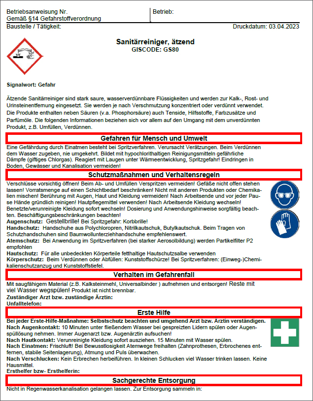
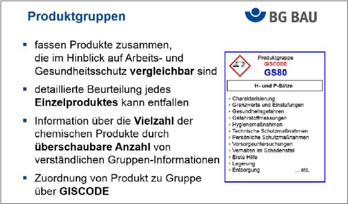
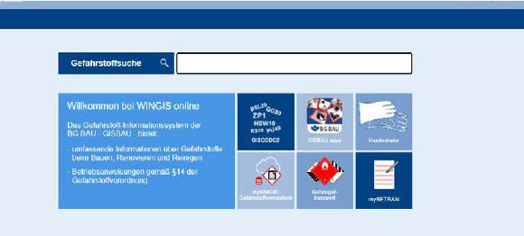
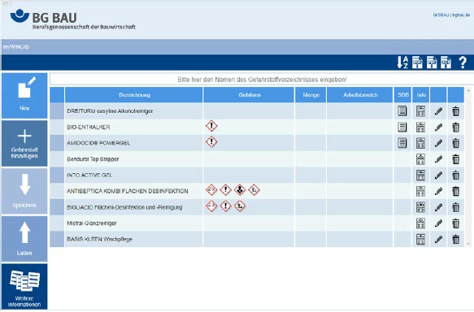
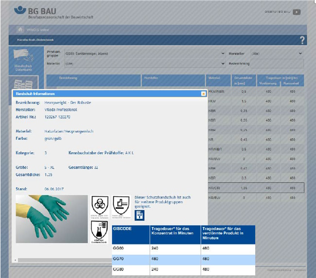

4.1.1 Grundlagen/Ziele von GISCODES
Reinigungs- und Pflegemittel enthalten häufig Inhaltsstoffe, für deren Verwendung Gesundheitsschutzmaßnahmen getroffen werden müssen. Gerade mit Einführung der Regelungen zu Einstufung und Kennzeichnung gefährlicher Stoffe nach dem Global Harmonisierten System (GHS) ist der überwiegende Teil der Reinigungs- und Pflegemittel als gefährliche Stoffe zu betrachten und entsprechend gekennzeichnet. Die Unternehmen und Verarbeiter sind jedoch kaum in der Lage, alle Vorschriften des Gefahrstoffrechts exakt und vollständig umzusetzen.
Um zu einem sicheren Umgang mit diesen Produkten beizutragen und die "Compliance" mit dem Gefahrstoffrecht bei Tätigkeiten mit Reinigungs- und Pflegemitteln zu erleichtern, hat die Berufsgenossenschaft der Bauwirtschaft (BG BAU) gemeinsam mit dem Bundesinnungsverband des Gebäudereiniger-Handwerks (BIV), der Industriegewerkschaft Bauen - Agrar - Umwelt (IG BAU) und dem Industrieverband Hygiene und Oberflächenschutz (IHO) bereits vor vielen Jahren ein freiwilliges Klassifizierungssystem, den GISCODE, entwickelt.
Der GISCODE ermöglicht es, die Gefährdung durch Reinigungs- und Pflegemittel sehr schnell zuzuordnen und einen Überblick über die notwendigen Schutzmaßnahmen zu erhalten. Im GISCODE sind alle Produkte, die hinsichtlich ihrer Inhaltsstoffe, Gesundheitsgefährdung und Schutzmaßnahmen vergleichbar sind, einer Produktgruppe zugeordnet, z. B. "Sanitärreiniger, ätzend". Die GISCODE-Gruppen sind durch entsprechende Kurzbezeichnungen (hier im Beispiel: "GS80") gekennzeichnet.
Ob entsprechende Schutzmaßnahmen getroffen werden müssen oder bestimmte Verhaltensregeln befolgt werden sollten, wird durch den GISCODE schnell ersichtlich. Für jede dieser Gruppen wurden Produktinformationen erstellt, die für alle in einer Gruppe zusammengefassten Produkte gültig sind. Beschrieben werden darin u. a. die Charakterisierung des Produktes, Schutzmaßnahmen, Entsorgung, Lagerung oder Handhabung im Schadensfall.
Ein Beispiel für eine solche GISBAU-Information ist im Anhang 1 dargestellt. Diese Information ist an Arbeitgeber gerichtet und soll sie bei der Gefährdungsbeurteilung unterstützen. Für die Unterrichtung der Beschäftigten sind für die GISCODES Betriebsanweisungsentwürfe in 17 Sprachen verfügbar (ein Beispiel ist in Abbildung 3 gezeigt).
Im idealen Fall funktioniert der GISCODE folgendermaßen: Die herstellenden Unternehmen ordnen ihre Reinigungs- und Pflegemittel den Produktgruppen zu und nehmen den GISCODE in ihre Informationen (Sicherheitsdatenblätter, technische Merkblätter) und das Gebindeetikett auf. Die Codierung erscheint auch auf den von GISBAU herausgegebenen Produktgruppeninformationen, wodurch jedes Reinigungsmittel eindeutig charakterisiert ist.
Ohne das verwendete Einzelprodukt selbst beurteilen zu müssen, erhalten Arbeitgeber Hinweise zu möglichen Gesundheitsgefahren und notwendigen Schutzmaßnahmen.
Es müssen beispielsweise nicht mehr für alle verwendeten Produkte jeweils einzelne Betriebsanweisungen vorhanden sein. Über Produkte, die einer Produktgruppe zugeordnet sind, kann anhand der entsprechenden Produktgruppen-Information und Betriebsanweisung informiert werden. Die Produktgruppen-Informationen und Betriebsanweisungsentwürfe können von der Berufsgenossenschaft der Bauwirtschaft bezogen werden: Sie sind in WINGIS, der Gefahrstoff-Software von GISBAU, enthalten sowie im Internet unter der Adresse www.wingisonline.de abrufbar.
Eine weitere Vereinfachung stellt das Konzept der Sammelbetriebsanweisungen für Tätigkeiten mit verdünnten Produkten dar, das im Kapitel 4.1.3 beschrieben wird (vgl. Anhang 2 und Anhang 3).
GISCODES (früher auch "Produkt-Codes" genannt) gelten als relevante, für Arbeitgeber mit zumutbarem Aufwand zugängliche Informationsquellen bei der Gefahrstoffermittlung nach TRGS 400. Arbeitgeber können sich viele Ermittlungsschritte sparen, wenn für ihre Branche ein überbetriebliches Unterstützungskonzept, also eine Branchenlösung wie der GISCODE existiert.
Siehe auch TRGS 400 Nr. 5.1 Abs. 7 und www.wingisonline.de

Abb. 3 Betriebsanweisung für GISCODE GS80

Abb. 4 Vorteile des Produktgruppen-Konzepts
4.1.2 Aufbau des GISCODES
Bedingt durch die verhältnismäßig große Vielfalt an Produkten für die Gebäudereinigung beinhaltet der GISCODE für Reinigungs- und Pflegemittel mehr als 50 Produktgruppen. Deshalb ist der Code in 10 Bereiche untergliedert:
Innerhalb der einzelnen Bereiche sind diverse Kriterien für die Unterscheidung der einzelnen Produktgruppen herangezogen worden. Stets wurde versucht, die Anzahl der Produktgruppen möglichst gering zu halten. Aber da unterschiedliche Produkt-Kennzeichnungen (reizend/ätzend usw.) nicht in ein und derselben Produktgruppe auftreten sollen, ist grundsätzlich unterschieden worden nach:
Für eine Zuordnung von Produkten zum GISCODE bietet ein Einstufungsleitfaden wertvolle Hilfe (https://www.bgbau.de/themen/sicherheit-und-gesundheit/gefahrstoffe/wingis/einstufungskataloge/).
An dieser Stelle noch ein Hinweis auf die Zahlen im GISCODE: In der Regel spiegeln höhere Zahlen eine größere Gefährdung durch die Produkte wider, was insbesondere auch die Substitutionsprüfung vereinfachen kann.
Siehe auch Einstufungskatalog der BG BAU für Reinigungs- und Pflegemittel
4.1.3 Konzept "Sammelbetriebsanweisungen für verdünnte Produkte"
Bei vielen Tätigkeiten in der Gebäudereinigung werden die Reinigungsmittel in verdünnter Form eingesetzt. Die Anwendungslösungen bestehen also überwiegend aus Wasser und sind im Vergleich mit den unverdünnten Reinigungsmitteln weniger gesundheitsgefährlich. Die im Rahmen des GISCODES für Reinigungs- und Pflegemittel erstellten Betriebsanweisungsentwürfe beziehen sich überwiegend auf Tätigkeiten mit den Konzentraten. Mit den im Anhang 3 aufgeführten Sammelbetriebsanweisungen liegen auch für viele Tätigkeiten mit verdünnten Anwendungslösungen Betriebsanweisungsentwürfe vor. Damit lässt sich ein großer Teil der alltäglichen Arbeiten in der Gebäudereinigung erfassen:
Selbstverständlich gibt es Grenzen bei der Anwendung dieser recht weit gefassten Bereiche. Einzelheiten hierzu finden sich im Kopf der Betriebsanweisungen und in der im Anhang 2 dargestellten "Unterweisungshilfe". So ist in manchen Fällen die maximale Anwendungskonzentration begrenzt (z. B. 5 % für Desinfektionsreiniger), bestimmte Produktgruppen sind ausgeschlossen (z. B. GS90 bei Sanitärreinigungsmitteln oder GD70-90 bei Desinfektionsreinigungsmitteln) und manche Bereiche wie die Fassadenreiniger, Rohrreiniger, Emulsionen/Dispersionen oder Holz- und Steinpflegemittel sind gar nicht einbezogen.
Um sicherzustellen, dass die Sammelbetriebsanweisungen auch tatsächlich für die vor Ort eingesetzten Reinigungsmittel eingesetzt werden können, muss kontrolliert werden, ob die Produkte zu den aufgeführten Produktgruppen "passen". Das ist stets dann der Fall, wenn das Produkt einen entsprechenden GISCODE trägt und in WINGIS oder WINGIS-Online enthalten ist.
Bei Produkten, die nicht zu einem der aufgelisteten GISCODES gehören, beispielsweise mit einem Produkt-Code "Null" (z. B. GD0, GG0, GS0, GU0, ...), bei Druckgaspackungen oder enzymhaltigen Reinigungsmitteln usw., kann das System nicht angewendet werden. Gleiches gilt für abweichende Arbeitsverfahren wie maschinelle Spritzverfahren, Sprühlanzen, Hochdruck-Reinigung.
Letztlich kann dieses System nicht den Arbeitgebern die Verantwortung für die Gefährdungsbeurteilung und die Unterweisung der Beschäftigten abnehmen. Aber es zeigt Wege auf, wie die Unterweisung der Beschäftigten auf eine sinnvolle Art und Weise auf das Wichtige und Notwendige beschränkt werden kann. Wichtig ist, dass sie die grundlegenden Gefahren und Schutzmaßnahmen erkennen und beherzigen.
Siehe auch www.wingisonline.de
4.2.1 WINGISonline
Mit WINGIS stellt die Berufsgenossenschaft der Bauwirtschaft ihren Mitgliedsbetrieben ein modular aufgebautes, dokumentenorientiertes EDV-Programm zur Verfügung, mit dem viele Schritte des Gefahrstoffmanagements schnell und einfach erledigt werden können (Abbildung 5: WINGIS-Startseite). Näheres findet sich unter https://www.bgbau.de/themen/sicherheit-und-gesundheit/gefahrstoffe/was-ist-wingis/.

Abb. 5 WINGIS-Startseite
Durch Eingabe eines Suchbegriffes in den Eingabeschlitz "Gefahrstoffsuche" können Informationen zu Reinigungsmitteln auch über die Handelsbezeichnungen (z. B. "Sanitärreiniger rot") aufgerufen werden. Ebenso können hier die Produktgruppen (z. B. "GISCODE GS80" oder nur "GS80") oder auch einzelne Inhaltsstoffe wie "Ethanol" gesucht werden. Auf diese Weise sind die GISBAU-Informationen als Hilfestellung für die Gefährdungsbeurteilung aber auch die Betriebsanweisungsentwürfe in 17 Sprachen zugänglich.
Über die Kachel "GISCODES" ist eine Übersicht über alle von GISBAU erstellten GISCODES sowie die jeweiligen Einstufungskataloge zu erreichen. Die von GISBAU zur Verfügung gestellten Apps für mobile Systeme sind über die Kachel "GISBAU Apps" zugänglich. Das Modul "Gefahrstofftransport" unterstützt bei der Beurteilung, ob ein Gefahrguttransport unter die Kleinmengenregelung fällt.
Die Module Handschuhe, myBETRAN und das Gefahrstoffverzeichnis myWINGIS sind im Folgenden kurz beschrieben.
Siehe auch www.wingisonline.de und WINGIS-Online-Handbuch
4.2.1.1 Gefahrstoffverzeichnis führen mit myWINGIS
Mit dem Modul "myWINGIS" lässt sich auf einfache Art und Weise ein EDV-basiertes Gefahrstoffverzeichnis (Abbildung 6: Beispiel eines Gefahrstoffverzeichnisses in myWINGIS) erstellen und vor allem auch aktuell halten. Durch die nahtlose Verknüpfung mit WINGIS besteht die Möglichkeit, aus dem Gefahrstoffverzeichnis heraus die GISBAU-Informationen aufzurufen, die die Arbeitgeber bei der Gefährdungsbeurteilung unterstützen. Unter optimalen Bedingungen sind selbst die Sicherheitsdatenblätter direkt mit dem Gefahrstoffverzeichnis verknüpft und es erübrigt sich, die H-Sätze usw. abzuschreiben. Das setzt allerdings voraus, dass sich die herstellenden Unternehmen der Reinigungsmittel entsprechend am GISCODE-System beteiligen und ihre Sicherheitsdatenblätter in den "GefKomm-Bau-SDB-Pool" einspielen.

Abb. 6 Beispiel eines Gefahrstoffverzeichnises in myWINGIS
Siehe auch www.wingisonline.de
4.2.1.2 Betriebsanweisungen erstellen mit myBETRAN
Falls die Betriebsanweisungsentwürfe des GISCODES für Reinigungs- und Pflegemittel nicht ausreichend sein sollten, beispielsweise beim Einsatz von Spezialprodukten wie Kaugummi-Entferner, Duftsprays o. ä. stehen Arbeitgeber vor der Aufgabe, Betriebsanweisungen selbst erstellen zu müssen, wenn nicht die herstellenden Unternehmen geeignete Betriebsanweisungen anbieten.
Für diese Vorgehensweise der eigenständigen Erstellung einer Betriebsanweisung stellt die BG BAU mit dem Modul "myBETRAN" ein hilfreiches Werkzeug für das Gestalten der Betriebsanweisung zur Verfügung. Wenn ausschließlich die angebotenen Standardtexte genutzt werden, können die selbst erstellten Betriebsanweisungen ebenfalls in 17 Sprachen ausgegeben werden.
Siehe auch myBETRAN (wingisonline.de)
4.2.1.3 Die GISBAU-Handschuhdatenbank
Die REACH-Verordnung sieht vor, dass die herstellenden Unternehmen der Reinigungsmittel in den Sicherheitsdatenblättern im Abschnitt 8 für das Produkt geeignete Schutzhandschuhe benennen. Allerdings findet man immer noch in vielen Sicherheitsdatenblättern sinngemäß Angaben wie "geeignete Schutzhandschuhe können bei dem herstellenden Unternehmen erfragt werden". Damit nicht jeder Gebäudereinigungs-Betrieb entsprechende Anfragen an die herstellenden Unternehmen von Handschuhen stellen muss, hat die BG BAU dieses bereits vor vielen Jahren für die Produktgruppen des GISCODES für Reinigungs- und Pflegemittel gemacht. Die von den herstellenden Unternehmen für Handschuhe ausgesprochenen Tragedauerempfehlungen für ihre Handschuhfabrikate sind in der GISBAU-Handschuhdatenbank zusammengestellt (siehe auch Abbildung 7: GISBAU-Handschuhdatenbank). Mithilfe dieser Datenbank ist es nun ein Leichtes, für den Umgang mit einem Reinigungsmittel – oder auch mehreren verschiedenen – geeignete Handschuhfabrikate zu finden.
Chemikalienschutzhandschuhe können Stoffe enthalten, die zu Allergien führen können. Reinigungskräfte, die gegenüber einem solchen Stoff allergisch reagieren, benötigen also Handschuhe, die frei von diesem Stoff sind. Um auch hier Hilfestellungen zur Auswahl von Handschuhen zu geben, gibt es die Liste der Allergene in Handschuhen (https://www.bgbau.de/handschuhallergene). Dort sind für die Handschuhe eines herstellenden Unternehmens die enthaltenen Allergene aufgeführt.
Siehe auch Handschuhdatenbank (wingisonline.de)

Abb. 7 GISBAU-Handschuhdatenbank